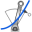
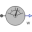

DCPM_CurrentControlledTest example: DC with permanent magnet starting with current controller |
|
Diagram
{kind=link}
Information
This information is part of the Modelica Standard Library maintained by the Modelica Association.
Test example: Permanent magnet DC machine started with current controllerThe current controller is parameterized according to absolute optimum. At time 0.1 s a reference current step with height = nominal armature current is applied, causing the DC machine to start, and accelerating inertias.
The machine is loaded by a quadratic speed dependent load torque.
Simulate for 2 seconds and plot (versus time):
- dcpm.ia: armature current
- dcpm.wMechanical: motor's speed
- dcpm.tauElectrical: motor's torque
Parameters (11)
| TLoad |
Value: ViNominal * dcpmData.IaNominal / dcpmData.wNominal Type: Torque (N·m) Description: Nominal load torque |
|---|---|
| wLoad |
Value: dcpmData.wNominal Type: AngularVelocity (rad/s) Description: Nominal load torque |
| JLoad |
Value: dcpmData.Jr Type: Inertia (kg·m²) Description: Load's moment of inertia |
| Ra |
Value: Modelica.Electrical.Machines.Thermal.convertResistance(dcpmData.Ra, dcpmData.TaRef, dcpmData.alpha20a, dcpmData.TaNominal) Type: Resistance (Ω) Description: Warm armature resistance |
| ViNominal |
Value: dcpmData.VaNominal - Ra * dcpmData.IaNominal Type: Voltage (V) Description: Nominal induced voltage |
| Ta |
Value: dcpmData.La / Ra Type: Time (s) Description: Armature time constant |
| Ts |
Value: 1e-3 Type: Time (s) Description: Dead time of inverter |
| k |
Value: Ra * Ta / (2 * Ts) Type: Resistance (Ω) Description: Current controller proportional gain |
| Ti |
Value: Ta Type: Time (s) Description: Current controller integral time constant |
| kPhi |
Value: ViNominal / dcpmData.wNominal Type: MagneticFlux (Wb) Description: Voltage constant |
| dcpmData |
Value: Type: DcPermanentMagnetData |
Components (11)
| dcpm |
Type: DC_PermanentMagnet |
|
|---|---|---|
| step |
Type: Step |
|
| signalVoltage |
Type: SignalVoltage |
|
| ground |
Type: Ground |
|
| loadInertia |
Type: Inertia |
|
|  | loadTorque | |
| dcpmData |
Type: DcPermanentMagnetData |
|
| currentSensor |
Type: CurrentSensor |
|
|  | speedSensor |
Type: SpeedSensor |
| firstOrder |
Type: FirstOrder |
|
| PID |
Type: LimPID |